Diş beyazlatma tedavimizle dişlerin mine ve dentin tabakasında çeşitli nedenlerle oluşan renk bozulmalarını ve lekeleri gideriyoruz. Beyazlatma olarak da bilinen bu işlemle dişler önceki tonlarına göre beyazlatılır. Dişleri beyazlatmak için dişlere özel bir jel sürülür ve ışık kaynağı ile reaksiyon hızlandırılır. Çok hızlı ve güvenli bir işlem olan beyazlatma, olumlu sonuçlarıyla sizi mutlu eder. Dişler tek seansta beyazlatılır.
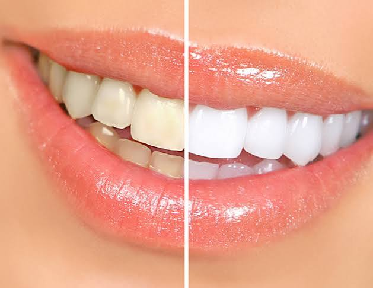
Diş teli tedavisi; çapraşık, aralıklı veya yanlış hizalanmış dişlerin düzeltilerek daha sağlıklı ve estetik bir gülüş elde edilmesini sağlar. Tedavi süreci, dişlerin yapısına ve ihtiyaçlarına göre kişiye özel planlanır.
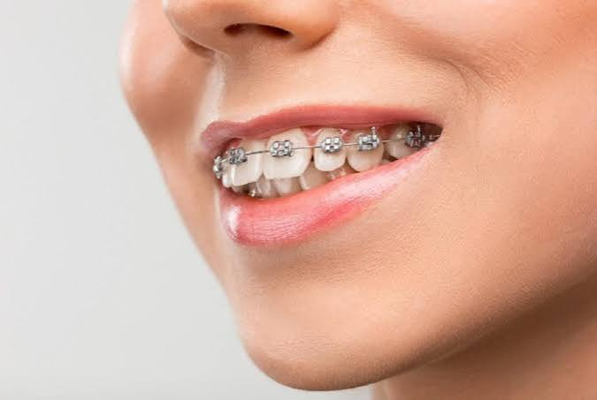
Diş taşı temizliği, diş yüzeylerinde biriken plak ve sertleşmiş diş taşlarının profesyonel olarak uzaklaştırılması işlemidir. Düzenli temizlik, diş eti sağlığının korunmasına ve ağızda oluşabilecek kötü koku ile diş eti problemlerinin önlenmesine yardımcı olur.
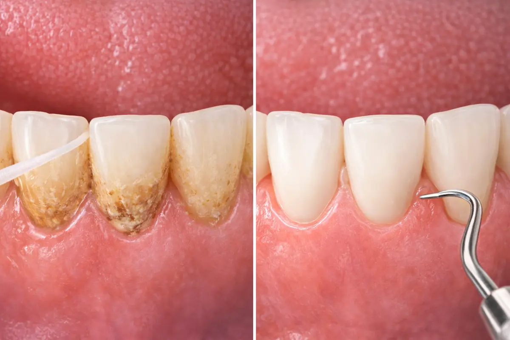
Diş dolgusu, çürük veya hasar görmüş dişlerin onarılması ve işlevinin yeniden kazandırılması için uygulanan bir tedavidir. Çürük bölge temizlenerek uygun dolgu materyaliyle tamamlanır ve dişin doğal görünümü korunur.
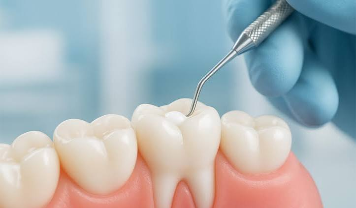
Gömülü diş çekimi, çene kemiği veya diş eti içerisinde tam olarak çıkamayan dişlerin cerrahi yöntemlerle çıkarılması işlemidir. Özellikle 20 yaş dişlerinde sık görülür ve gerekli durumlarda ağrı, enfeksiyon ve diğer dişlere baskı gibi sorunların önlenmesine yardımcı olur.
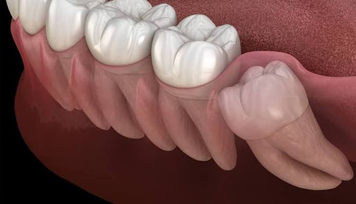
Gülüş tasarımı, dişlerin şekli, rengi, boyutu ve diş eti görünümünün kişinin yüz yapısına ve estetik beklentilerine uygun şekilde düzenlenmesidir. Amaç, doğal ve uyumlu bir gülüş elde etmektir.
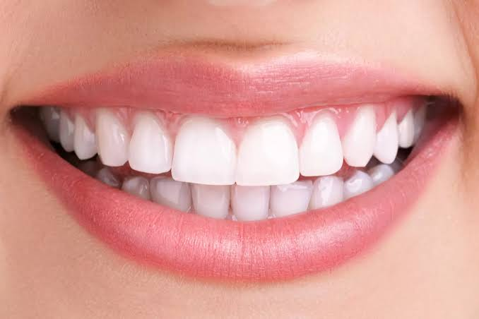
İmplant tedavisi, eksik dişlerin yerine çene kemiğine yerleştirilen yapay diş kökleri üzerine protez dişler uygulanmasıdır. Doğal diş görünümüne ve çiğneme fonksiyonuna yakın sonuçlar sunarak estetik ve konforlu bir gülüş elde edilmesine yardımcı olur.
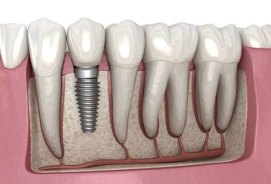
Kanal tedavisi, dişin iç kısmındaki sinir ve damar dokusunun enfekte olduğu veya hasar gördüğü durumlarda uygulanan bir tedavidir. Dişin içindeki hasarlı doku temizlenir, kanallar dezenfekte edilerek doldurulur. Amaç, doğal dişi korumak ve çekilmesini önlemektir.
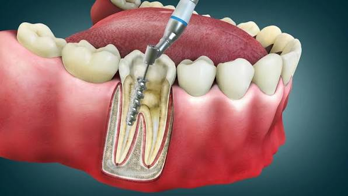
Porselen diş kaplama, hasarlı, renk değişimi olan veya şekil bozukluğu bulunan dişlerin üzerine porselenden hazırlanan kaplamaların yerleştirilmesi işlemidir. Dişlerin görünümünü iyileştirirken dayanıklılığını ve işlevini desteklemeye yardımcı olur.
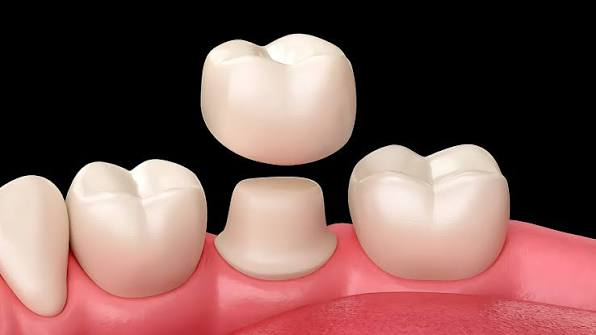
Şeffaf plak tedavisi, dişlerdeki çapraşıklık ve hizalama sorunlarını düzeltmek için kişiye özel hazırlanan, çıkarılabilir şeffaf plakların kullanıldığı bir ortodonti yöntemidir. Estetik görünümü ve kullanım kolaylığı sayesinde günlük yaşamda konforlu bir tedavi süreci sunar.
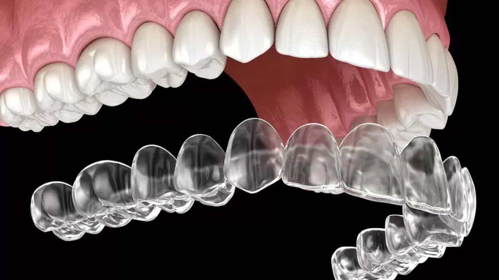
Zirkonyum diş kaplama, dişlerin görünümünü ve dayanıklılığını iyileştirmek amacıyla uygulanan estetik bir tedavidir. Doğal diş rengine yakın görünümü ve ışık geçirgenliği sayesinde dişlerle uyumlu, estetik bir gülüş elde edilmesine yardımcı olur.
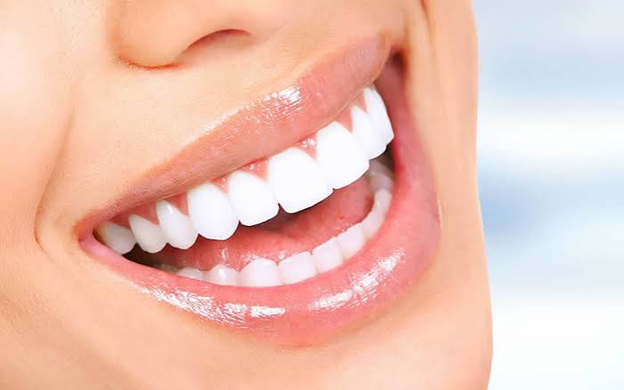